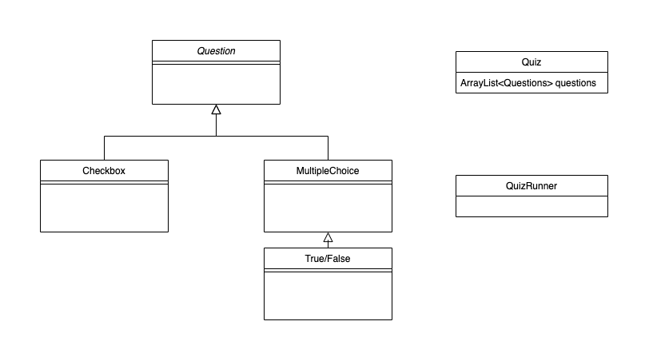
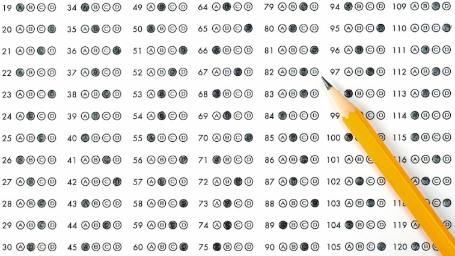

--- class: center, middle # Unit 2 ## Java Web Fundamentals ### Work Day 2 --- ### Today's Class - Optional "Real-World" Discussion - Checkins - Assignment 2 - Anything --- class: center, middle # Questions??? --- ### Discussion Outline - Definitions - Design and MVP - User Stories - Code --- ### Definitions - some we know - TDD: test driven development - UML Diagram: unified modeling language diagram --- ### Definitions - some we don't know - agile development (versus waterfall) - minimum viable product - user stories Note that you can do tons and tons of research on this stuff, but you really only get good at it by doing. No surprise there. --- ### Waterfall versus Agile <br/> Waterfall: a project management approach where a project is completed in distinct stages and moved step by step toward ultimate release to consumers. You make a big plan upfront and then execute in a linear fashion, hoping there won't be any changes in the plan. <br/> <br/> Agile: software development methodologies centered round the idea of iterative development, where requirements and solutions evolve through collaboration between self-organizing cross-functional teams. Kanban and Scrum are the most popular flavors of agile. --- ### MVP and User Stories MVP: A Minimum Viable Product is the smallest thing you can build that delivers customer value. <br/> User Stories: User stories are short, simple descriptions of a feature told from the perspective of the person who desires the new capability, usually a user or customer of the system. They typically follow a simple template: As a `<some user>`, I want `<some goal>` so that `<some reason>`. <br/> Backlog: list of user stories; I have used RedMine, Jira, GitLab, and Trello --- ### Design and MVP - How do we decide the design and MVP of the product? - Project managers and scrum master meet to discuss some of this. - In my experience: the developers get a hand in design and defining MVP, but it depends on where you work --- ### Design and MVP We already did design! Note that this IS NOT set in stone! In fact, we are going to use a more general design. But what does MVP look like? <div>  </div> --- ### Design and MVP One example of MVP could be that: MVP should consist of a runnable, gradable multiple choice test. With that in mind, let's write some stories! <div>  </div> --- ### User stories Recall the template: <br/> "As a `<some user>`, I want `<some goal>` so that `<some reason>`." <br/> <br/> Note that we don't HAVE to stick to a template, it depends on where you work and your team. I generally stick to a template when I have new developers on my team. <br/> <br/> In our case, we have two types of users. People writing the quiz and people taking the quiz. <br/> <br/> Here is our [Trello board](https://trello.com/b/ZS2fBIJY/funwithquizzes). Let's add some more stories. --- class: middle, center ### Let's add the necessary stories to Todo for MVP --- ### How to Code a Story? - Stories are not spelled out to us as TODOs like we have in our assignments. - Suggestion: write out (in comments) what my line of attack will be. - Use TDD to guide you - You get better by doing --- class: middle, center ### Time to Code!